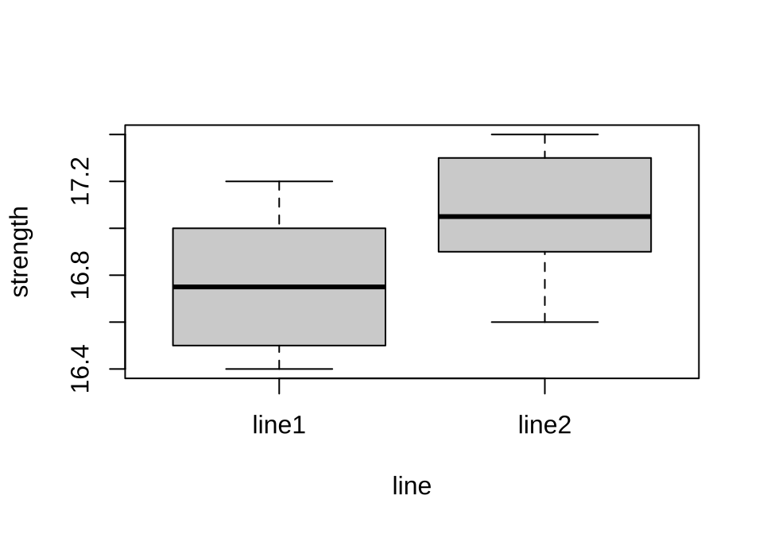
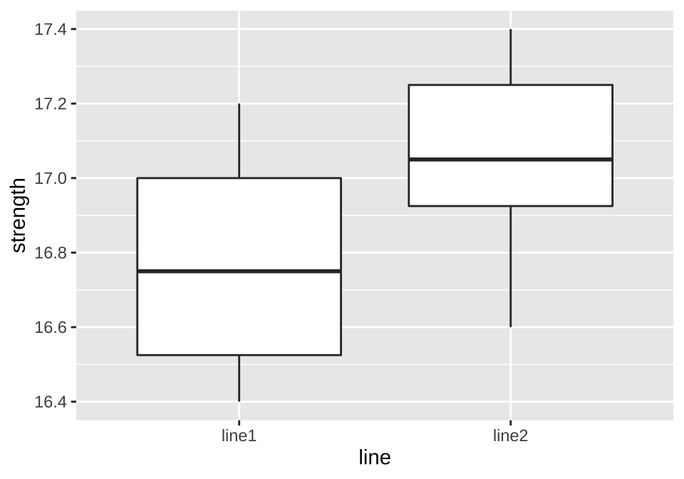
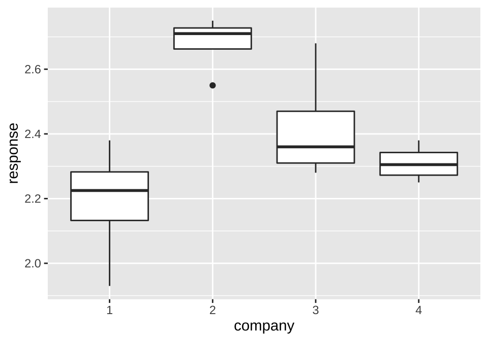
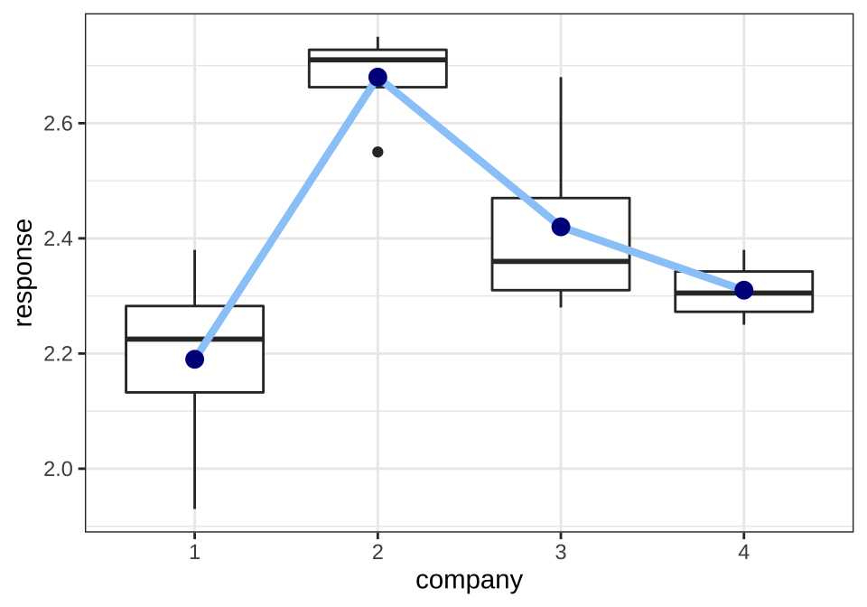

제 1 장 R을 이용한 집단 자료의 비교
대부분의 연구나 실험의 목적은 집단(group, 그룹)간의 유의한 차이가 있는지 검증하는 것이다. 집단의 차이는 집단의 특성를 파악할 수 있는 기술 통계량(descriptive statsitics)를 사용하여 비교 할 수 있다. 즉 각 집단에 대한 관심변수의 평균, 중앙값 등으로 집단 간 중심의 차이를 비교할 수 있고 표준편차, 사분위범위(Inter Quarile Range; IQR) 등을 사용하면 퍼진 정도도 비교할 수 있다.
이러한 기술 통계량을 이용한 비교도 의미가 있지만 그림을 통하여 집단 간의 차이를 나타내는 것이 자료의 특성을 이해하는데 더 큰 도움이 된다. 그림을 이용하면 자료의 전체적인 퍼진 정도를 파악하기 쉽고 이상치(outlier) 등을 알아내는데 도움이 된다.
이 장에서는 교과서에 제시된 예제 자료를 R 프로그램을 이용하여 분석할 것이다. 기술 통계량과 그림을 이용하여 집단을 비교하는 방법을 알아보고자 한다.
%>%) 의 사용법, 좁고 넓은 형태의 자료 변환, 패키지 ggplot2를 이용한 그림 그리기, 함수 gather, group_by, summarise 에 대한 설명은 R 프로그래밍에 대한 소개 사이트에 설명되어 있으니 참조하세요.
1.1 두 개 모집단의 비교
1.1.1 예제 2.2 자료
교재 2장의 예제 2.2 에서 소개된 인장 강도의 자료는 시멘트 공장의 2개의 생산라인에서 생산된 시멘트의 인장 강도를 측정한 것이다. 분석의 목적은 2개의 생산라인의 분포가 동일한지를 비교하는 것이다.
먼저 R로 데이터프레임(data.frame)으로 만들어 보자. 예제 자료를 line1 과 line2 의 벡터 형식으로 만들고 data.frame의 형식인 df0에 저장하려면 다음과 같은 명령어를 사용하면 된다.
line1 <- c(16.9, 16.4, 17.2, 16.4, 16.5, 17.0, 17.0, 17.2, 16.6, 16.6)
line2 <- c(16.6, 16.8, 17.4, 17.1, 17.0, 16.9, 17.3, 17.0, 17.1, 17.3)
df220 <- data.frame(line1, line2)
df220## line1 line2
## 1 16.9 16.6
## 2 16.4 16.8
## 3 17.2 17.4
## 4 16.4 17.1
## 5 16.5 17.0
## 6 17.0 16.9
## 7 17.0 17.3
## 8 17.2 17.0
## 9 16.6 17.1
## 10 16.6 17.3data.frame 인 df0에는 각 그룹(line1과 line2)에 대한 10개의 자료가 2개의 열(column)에 각각 저장되어 있다. 이러한 자료의 형태를 넓은 형태의 자료(wide-format data)라고 부른다.
위에서 만든 데이터프레임 df0 를 변형하여 반응값들을 하나의 변수(strength)로 합치고, 집단을 나타내는 변수 line를 생성하여 다른 형태의 데이터프레임 df를 다음과 같이 만들어 보자. 아래와 같은 형태의 자료를 좁은 형태의 자료(narrow-format data)라고 부른다. 넓은 형태보다 좁은 형태의 자료가 통계적 분석을 적용하기 편하다.
df22<- gather(df220, key="line", value="strength")
df22## line strength
## 1 line1 16.9
## 2 line1 16.4
## 3 line1 17.2
## 4 line1 16.4
## 5 line1 16.5
## 6 line1 17.0
## 7 line1 17.0
## 8 line1 17.2
## 9 line1 16.6
## 10 line1 16.6
## 11 line2 16.6
## 12 line2 16.8
## 13 line2 17.4
## 14 line2 17.1
## 15 line2 17.0
## 16 line2 16.9
## 17 line2 17.3
## 18 line2 17.0
## 19 line2 17.1
## 20 line2 17.31.1.2 기술 통계량에 의한 요약 - 넓은 형태의 자료
넓은 형태의 자료 df0에 대한 요약통계(평균, 중앙값, 사분위수, 최소, 최대 등)를 다음과 같이 summary 함수를 이용하여 구하고 집단간의 차이를 비교할 수 있다.
summary(df220)## line1 line2
## Min. :16.40 Min. :16.60
## 1st Qu.:16.52 1st Qu.:16.93
## Median :16.75 Median :17.05
## Mean :16.78 Mean :17.05
## 3rd Qu.:17.00 3rd Qu.:17.25
## Max. :17.20 Max. :17.401.1.3 기술 통계량에 의한 요약 - 좁은 형태의 자료
좁은 형태의 자료 df에 대해서는 다음과 같이 먼저 group_by함수로 집단을 구별하는 변수를 지정한다. 그 다음으로 summarise함수를 이용하여 여러 가지 통계량를 집단별로 계산할 수 있다.
df22 %>% group_by(line) %>% summarise(mean=mean(strength), median= median(strength), sd=sd(strength), min=min(strength), max=max(strength))## # A tibble: 2 x 6
## line mean median sd min max
## * <chr> <dbl> <dbl> <dbl> <dbl> <dbl>
## 1 line1 16.8 16.8 0.316 16.4 17.2
## 2 line2 17.0 17.0 0.246 16.6 17.41.1.4 집단 자료에 대한 시각화
다음으로 각 집단별로 상자그림(boxplot)을 그려서 자료의 중심과 퍼진 정도를 그림으로 비교해 보자. 위에서 좁은 형태로 구성된 자료에 대하여 다음과 같은 명령어로 상자그림을 집단별로 그릴 수 있다.
with(df22, boxplot(strength~line))
패키지 ggplot2를 사용하면 좀 더 멋진 상자그림으로 시각화를 할 수 있다.
ggplot(df22, aes(line, strength)) + geom_boxplot()
1.2 세 개 이상의 모집단의 비교
1.2.1 예제 3.1 자료
4개의 서로 다른 원단업체에서 직물을 공급받고 있다. 공급한 직물의 긁힘에 대한 저항력을 알아보기 위하여 각 업체마다 4개의 제품을 랜덤하게 선택하여 일원배치법에 의하여 마모도 검사을 실시하였다. 자료는 다음과 같다.
company<- as.factor(rep(c(1:4), each=4))
response<- c(1.93, 2.38, 2.20, 2.25,
2.55, 2.72, 2.75, 2.70,
2.40, 2.68, 2.32, 2.28,
2.33, 2.38, 2.28, 2.25)
df31<- data.frame(company=company, response= response)
df31## company response
## 1 1 1.93
## 2 1 2.38
## 3 1 2.20
## 4 1 2.25
## 5 2 2.55
## 6 2 2.72
## 7 2 2.75
## 8 2 2.70
## 9 3 2.40
## 10 3 2.68
## 11 3 2.32
## 12 3 2.28
## 13 4 2.33
## 14 4 2.38
## 15 4 2.28
## 16 4 2.251.2.2 기술 통계량에 의한 요약
df31s <- df31 %>% group_by(company) %>% summarise(mean=mean(response), median= median(response), sd=sd(response), min=min(response), max=max(response))
df31s## # A tibble: 4 x 6
## company mean median sd min max
## * <fct> <dbl> <dbl> <dbl> <dbl> <dbl>
## 1 1 2.19 2.22 0.189 1.93 2.38
## 2 2 2.68 2.71 0.0891 2.55 2.75
## 3 3 2.42 2.36 0.180 2.28 2.68
## 4 4 2.31 2.30 0.0572 2.25 2.381.2.3 집단 자료에 대한 시각화
ggplot(df31, aes(company, response)) + geom_boxplot()
ggplot(df31, aes(company, response)) +
geom_boxplot() +
geom_line(data=df31s, aes(x=company, y=mean, group=1), size=1.5, col="#9ACBF9") +
geom_point(data=df31s, aes(x=company, y=mean), col="darkblue", size=3) +
theme_bw()